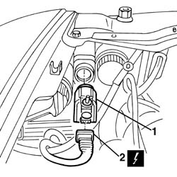

5540C24 motor (one) for l/h or r/h headlamp/light cluster alignment correction - r+r
- Path
- Procedures > 55 ELECTRICAL EQUIPMENT > 5540 EXTERIOR LIGHTING > 5540C headlamp/light cluster alignment correction devices > 5540C24 motor (one) for l/h or r/h headlamp/light cluster alignment correction - r+r
- Kind
- repair procedure (removal / refitting; the operation number is the code)
- Applies to
- all engines; all production periods
- Interactive page
- https://sloeber94.github.io/elrnDB-a156/en/#/3238461
Applies to: engines: 1.9 JTD 16v; all production periods
 Removing
Removing
 Refitting
RefittingApplies to: engines: 1.9 JTD 16v; all production periods
1. Open the bonnet lid and turn the motor (turn the left motor anticlockwise and the right motor clockwise), then remove.
2. Disconnect the motor from the electrical connection.
 | Name | Connector |
|---|---|---|
2 | Left headlamp alignment corrector motor |
| Name | Connector |
|---|---|---|
2 | Right headlamp alignment corrector motor |

Applies to: all engines; all production periods
Refitting
RemovingIf necessary, check the operation of the motor and check that the headlamp movement rod travel is correct, for the various positions selectable.
 | Measurement | Value | |
|---|---|---|---|
- | Rod travel (mm) | Pos. 1 | 0 |
Pos. 2 | 0.6 | ||
Pos. 3 | 1.44 | ||
Pos. 4 | 2.5 | ||
Connect the motor electrical connection.
Insert the motor in its housing and turn it (turn the left motor clockwise and right motor anticlockwise).
Check that the motor is working by operating the special switch from the passenger compartment, with the dipped headlamps switched on.
Applies to: engines: 1.9 JTD 16v; all production periods
Topics linked from this page (5)
- 5540B38 headlamp/light cluster light beam - position
- 7025A12 Engine front sound insulation COVER - R.R.
- 7025A14 Bonnet LID - R.R.
- N30 Left headlamp alignment corrector motor ( FRONT )
- N31 Right headlamp alignment corrector motor